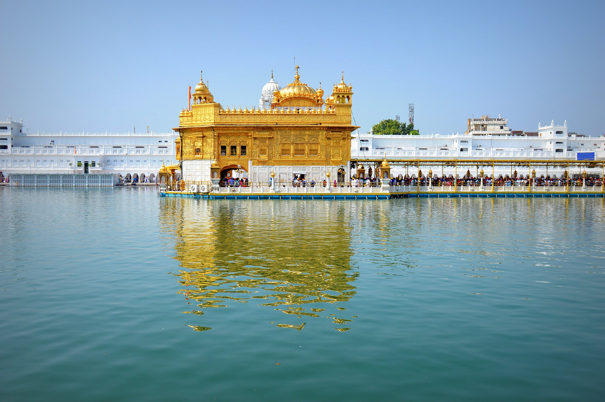

OCEAN OF WISDOM
OTHER INDIAN PHILOSOPHIES
Sikhism — Guru Nanak and the Ten Gurus
Origins and historical setting
Sikhism arose in Punjab in the late fifteenth century. Guru Nanak (1469–1539) taught devotion to the One, honest work, sharing and remembrance of the divine. The tradition developed through ten human Gurus.

Central teachings
Ik Onkar expresses the oneness of the divine. Sikh teachings emphasise equality, dignity, truthful living, compassion and service. Naam japna, kirat karni and vand chhakna connect remembrance, honest work and sharing.
Texts, practices and communities
The Guru Granth Sahib is the Sikh scripture and eternal living Guru. It includes compositions of Sikh Gurus and other spiritual figures. The Khalsa was established in 1699 by Guru Gobind Singh.
Legacy and continuing life
The ten Gurus were Nanak, Angad, Amar Das, Ram Das, Arjan, Hargobind, Har Rai, Har Krishan, Tegh Bahadur and Gobind Singh. Sikh history includes sangat, langar, defence of religious freedom and seva.
The teachings that shape Sikh life
The opening Mul Mantar of the Guru Granth Sahib begins with Ik Onkar, affirming the oneness of the divine. Sikh teaching rejects caste hierarchy as a measure of spiritual worth and places dignity, equality and remembrance of the One at the centre of life.
Three often-cited principles are Naam Japna (remembering the Divine Name), Kirat Karni (earning through honest work) and Vand Chhakna (sharing with others). Seva, selfless service, and sangat, the community gathered in devotion, give these principles a shared social expression. Langar, the free communal meal served in gurdwaras, embodies equality through a common table.
The scripture and the succession of the Gurus
Guru Arjan compiled the Adi Granth in 1604. In 1708, Guru Gobind Singh affirmed the Guru Granth Sahib as the enduring Guru of the Sikh community; the line of human Gurus therefore concluded with him. The scripture contains compositions by Sikh Gurus as well as devotional voices from other backgrounds.
In 1699, Guru Gobind Singh established the Khalsa, giving a distinct collective discipline and identity to initiated Sikhs. Sikh history also includes the defence of freedom of conscience, notably the martyrdom of Guru Tegh Bahadur, and the continuing institutions of sangat, langar and seva.